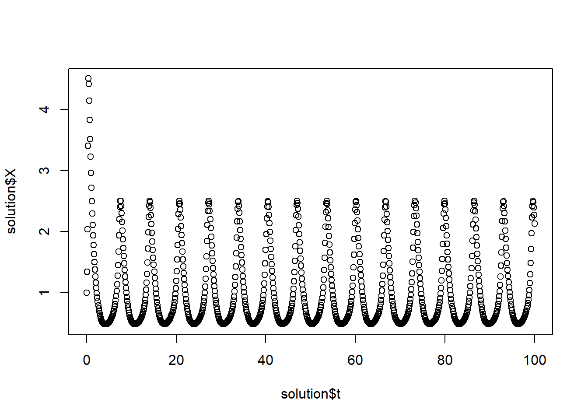
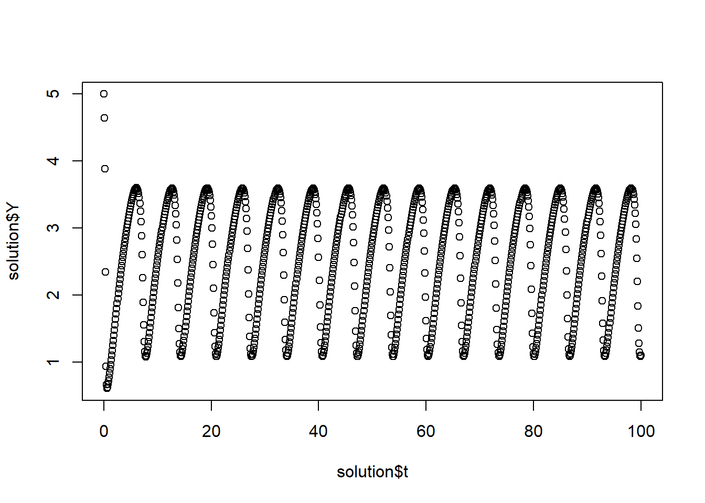

Chemical Reaction
Vignette Author
2017-11-10
Build the Reaction class with a RK4 solver
library(rODE)
# This code can also be found in the `examples` folder under this name:
# Reaction.R
# /**
# * Reaction models an autocatalytic oscillating chemical reaction
# * (Brusselator model) by implementing the ODE interface.
# * @author Wolfgang Christian
# * @version 1.0
# * Converted to R by: Alfonso R. Reyes
#
# */
setClass("Reaction", slots = c(
k1 = "numeric",
k2 = "numeric",
k3 = "numeric",
k4 = "numeric",
A = "numeric",
B = "numeric",
state = "numeric",
odeSolver = "RK4"
),
prototype = prototype(
k1 = 1.0, k2 = 2.5, k3 = 1.0, k4 = 1.0, # reaction rates
A = 1, B = 1, # reactant concenterations
state = c(0, 0, 0) # X, Y, t
),
contains = c("ODE")
)
setMethod("getState", "Reaction", function(object) {
object@state
})
setMethod("getRate", "Reaction", function(object, state, ...) {
xxy <- state[1] * state[1] *state[2]
object@rate[1] <- object@k1 * object@A - object@k2 * object@B * state[1] +
object@k3 * xxy - object@k4 * state[1] # X rate
object@rate[2] <- object@k2 * object@B * state[1] - object@k3 * xxy # Y rate
object@rate[3] <- 1 # rate of change of time, dt/dt
object@rate # time derivative
})
# constructor
Reaction <- function(initialConditions) {
.Reaction <- new("Reaction")
.Reaction@state <- initialConditions
.Reaction
}## [1] "getState"
## [1] "getRate"Run the application ReactionApp
# +++++++++++++++++++++++++++++++++++++++++++++++++++ application: ReactionApp.R
# ReactionApp solves an autocatalytic oscillating chemical
# reaction (Brusselator model) using
# a fourth-order Runge-Kutta algorithm.
ReactionApp <- function(verbose = FALSE) {
X <- 1; Y <- 5;
dt <- 0.1
reaction <- Reaction(c(X, Y, 0))
solver <- RK4(reaction)
rowvec <- vector("list")
i <- 1
while (getState(reaction)[3] < 100) { # stop at t = 100
rowvec[[i]] <- list(t = getState(reaction)[3],
X = getState(reaction)[1],
Y = getState(reaction)[2])
solver <- step(solver)
reaction <- getODE(solver)
i <- i + 1
}
DT <- data.table::rbindlist(rowvec)
return(DT)
}
solution <- ReactionApp()
plot(solution$t, solution$X)
plot(solution$t, solution$Y)
plot(solution$X, solution$Y)